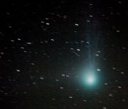

Struktura komet, dráhy a rodiny komet, původ a zánik, známé komety

kometa Machholz
Komety jsou malá tělesa Sluneční soustavy. Zajímavé jsou tím, že vytvářejí komu a ohon, což z jasných komet činí objekty, na které je vcelku pěkná podívaná.
Jsou součástí meziplanetární hmoty stejně jako planetky nebo meteoroidy.